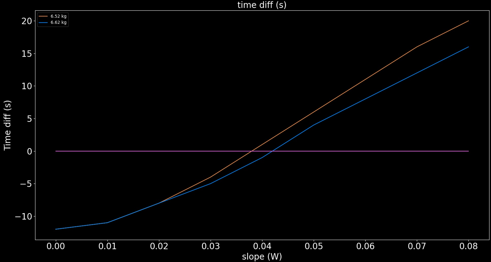
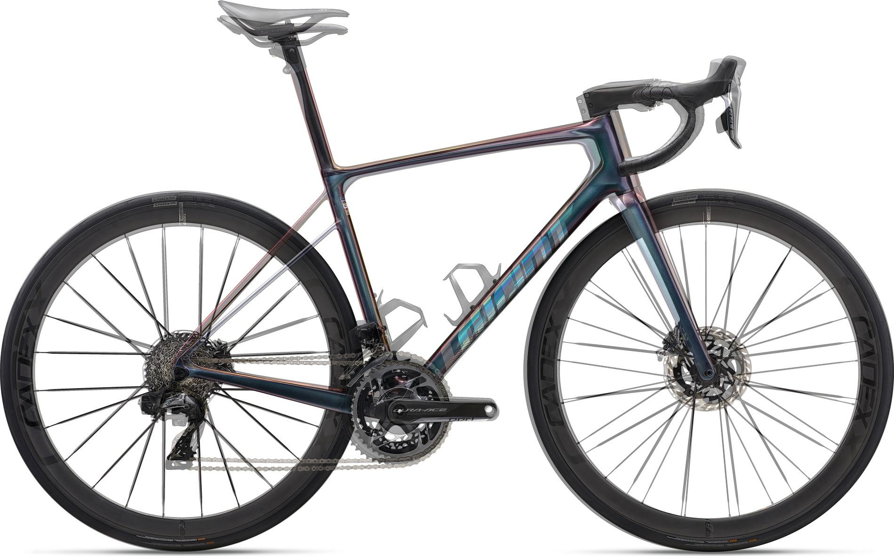
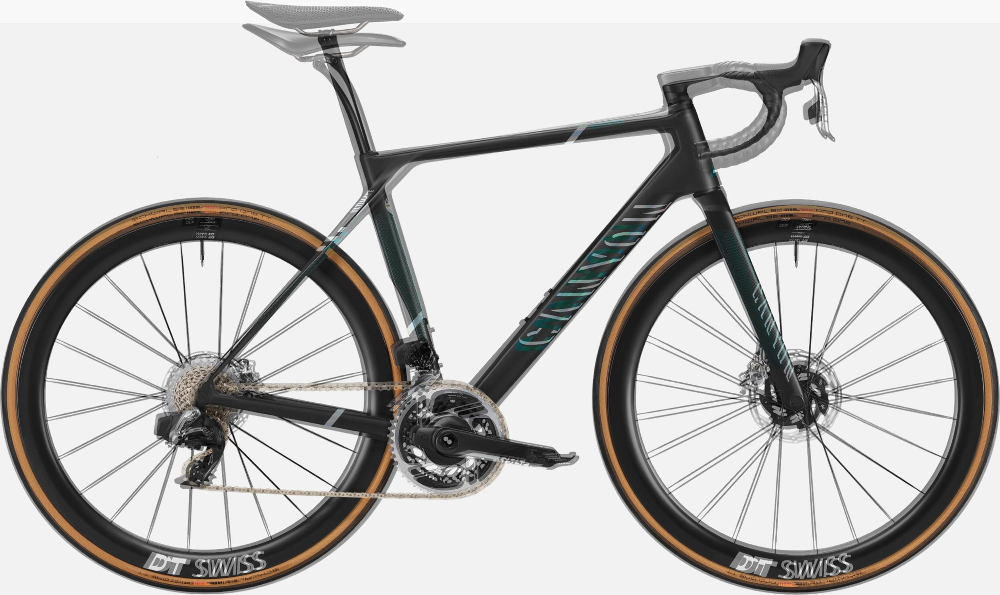

TCR PROPEL DEFY 的差異及如何選
TCR PROPEL DEFY 這三台車是 Giant 旗下的競賽車種，自從 2022 propel 改款後，重量大幅下降了 600 g，總重量上也是可以達到 6.8 kg。但是車架空力部分則是略遜於前代。TOUR 的測試結果只比 2014 年少了 1 W [1]，可以看得出往全能車靠攏，畢竟空力跟重量就是只能擇一不能兼得。以前大環賽也比較常見 TCR 身影。自從大改款後就比較多大環賽車手在騎 PROPEL，且重量輕量這麼多也比較容易被消費者接受。
而 2025 TCR 終於把現也整進把手裡面了，且捷安特宣稱車架重量比上一代少了 71 克，以爬坡車架而言再少 71 克其實滿多的。當然除了重量外，空氣阻力也是有優化的，看到座管的部分也可以看到右方座管偏水滴型，而新的座管是 D 型的，當然還有其他地方不同。捷安特宣稱車架空力比上一代少了 4.2 W 左右，但不知道是在多少的速度下去做量測，當然捷安特的 TCR 從以前到現在都是強調爬坡，所以輕量也一直 TCR 的強項，在上一代就已經很容易達到 UCI 的 6.8 kg 了，這一代整車組起來更是直接低到 6.5 kg。也來看一下 TOUR 雜誌的風阻測試，雖然裝備有一些差，但是其他條件滿一致的。2021 的 TCR 測出來是 229 W 妥妥的爬坡車結果而今年的 TCR 測出來則是 221 W [3]，當然不同的還有輪組跟變速才有這效果。
表一：TCR 與 PROPEL 的 tour 測試
| 風洞 | 裝備 | |
|---|---|---|
| 2023 PROPEL | 209[1] | Cadex SL 50, DA, Total: 6.8 kg |
| 2025 TCR | 221[2] | Cadex Max 40, DA, Total: 6.52 kg |
| 2021 TCR | 229[3] | Cadex 42, Red, Total: 6.6 kg |
然而有改變的不是只有 TCR 車架，還有新的 DA 輪組跟把手等裝備，所以重量上就 TOUR 雜誌的，測試是比上一代輕約 80 g 左右。而新一代的 Propel 也是得益於新的裝備，雖然車架設計比較偏全能車，已經沒有早期空力車和爬坡車重量那種巨大差異了。那麼來看一下什麼坡度下 TCR 才有優勢，人的重量一樣是 65 kg 騎 10 km 的路段，如果瓦數有 200 W 的話則是約 4% 以上，不過以 10 km 的路段來看 8% 也差約 20 秒而已，當然這個是用同一個瓦數下去做計算的，至少還要考慮這個瓦數你能不能撐完賽段。
|  |
|---|
| 圖一：TCR 與 PROPEL 在 200 W 時爬不同坡度的時間差[1] |
新的 DEFY 在重量上也減輕非常多，從官方給的數據來看 DEFY 會稍微重一點，在國外車主的開箱有提到，他買 AD SL M/L，然後全車重量含踏板跟水壺架，總重量大約是 6.8 公斤。DEFY 官方是給用 RED，2X 配 36T 的飛輪 配 36 高的 CADEX，如果都是從官方給的變速和輪組來看，TCR 用 DA 然後配 40 高的 CADEX，重量上會比 TCR 在重個 200 g 左右。而 DEFY 在 TOUR 雜誌算是長程車，對於該類車種 TOUR 都不會去做風洞測試，不過我們可以根據流體力學的性質來去判斷，那麼從車架的角度來看風阻的部分，如果說座高跟把手設定都跟 TCR 一樣，風阻大概是跟 TCR 差不多的，DEFY 座管的風阻會稍微大一點，這邊的判斷標準是從他的形狀來判斷。
表二：TCR 與 DEFY 配件重量比較
| New TCR AD SL | New DEFY AD SL | |
|---|---|---|
| 車架 | 746 | 785 |
| 前叉 | 340 | 345 |
| 前變吊耳 | 14.5 | 16 |
| 後變吊耳 | 13.4 | 13 |
| 擴張器 | 41.4 | 41.1 |
| 上蓋 | 5.5 | 5.7 |
| 頭碗組/墊圈 | 90.8 | 98.2 |
| 座桿/ISP座墊夾 | 107 | ?? |
| 變速系統 | DA | RED |
| 總重量 | 6.6 kg | 6.8 kg |
| 空力 | 221 W @ 45 kph | >= 221 W |
|  |
|---|
| 圖二：TCR 與 DEFY 車架差異 |
|  |
|---|
| 圖三：ENDURANCE 與 ULTIMATE 車架差異 |
參考資料
[1] https://www.tour-magazin.de/rennraeder/aero/giant-propel-advanced-sl-neues-aero-rennrad-im-test/
[2] https://www.tour-magazin.de/rennraeder/aero/feintuning-fuer-jubilaeumsmodell-neues-giant-tcr-im-exklusiven-tour-test/
[3] https://www.tour-magazin.de/rennraeder/aero/giant-tcr-advanced-1-im-tour-test/
[4] https://www.giant-bicycles.com/tw/defy-testing
[5] https://www.giant-bicycles.com/tw/tcr-testing
[6] https://www.giant-bicycles.com/tw